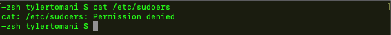
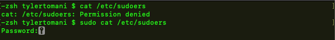
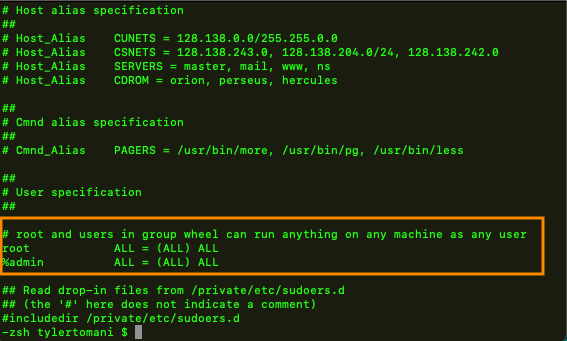

root
- can access anything
sudo "substitue user and do"
- is given privledges of root
- defaults to root but can choose other users
use -u option to specify different user other than root
sudo -u
sudo is used as a prefix to other commands
sudo cat file.txt
once sudo is used it won't ask for the password again for about 5 minutes
rememeber once using sudo it will stay in root or whatever user chosen
use -k to exit right after
sudo -k whoami
sudoers
located at
/etc/sudoers
if you try showing this file, access will be denied
so just prefix it with sudo
and it works
the users listed in the orange box above have the ability to use sudo
they are the sudoers